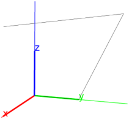
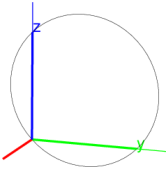
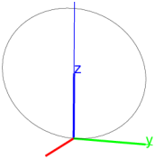
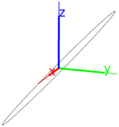

26.1.4 Viewing images
Starting from Xcas version 1.9.0, image objects are viewed by using
the display
command. The legacy Xcas image structure can be visualized by exporting
it to a file by using the writergb command (see Section 26.1.5).
-
display takes one mandatory arguments and one optional argument:
-
img, an image object.
- Optionally, either a,b, a pair of real numbers, or a+ib,
a complex number (by default, a=b=0).
- display(img ⟨,a,b ⟩)
or display(img ⟨,a+ib ⟩)
returns a graphic object showing img at location
(a,b) (the upper-left corner). The axes will be automatically hidden and
the view orthonormalized in order to preserve the original aspect ratio of the image.
In the examples that follow, we assume that the current directory in Xcas
is changed (by using the cd command, see Section 3.5.1)
to /usr/local/share/giac/examples.
Example
| img:=image("Exemples/demo/terre.jpg") |
|
| |
an image of size 512×256 (RGB)
| | | | | | | | | | |
|

Multiple images can be shown together by calling display several times
within a single command line (delimited by ;) and adjusting a and b
to appropriate values in each call. If desired, individual image captions can be
inserted by using the legend command
(See Section 19.4.5 for an example.) There is also a possibility
of combining images with other graphical objects.
| display(img);
rectangle(100+100i,200+100i,1,display=green+line_width_3);
legend(285+125i,"Here is Africa",display=white) |

Viewing images as textures.
Xcas can also display image files in rectangles in
2D or on surfaces in 3D with the
gl_texture
property of the object (see Section 17.1.2). This
procedure does not use image objects, but reads images
from disk.
Examples
| rectangle(0,200,1/2,gl_texture="Exemples/demo/terre.jpg") |

| sphere([0,0,0],1,gl_material=[gl_texture,"Exemples/demo/terre.jpg"]) |
